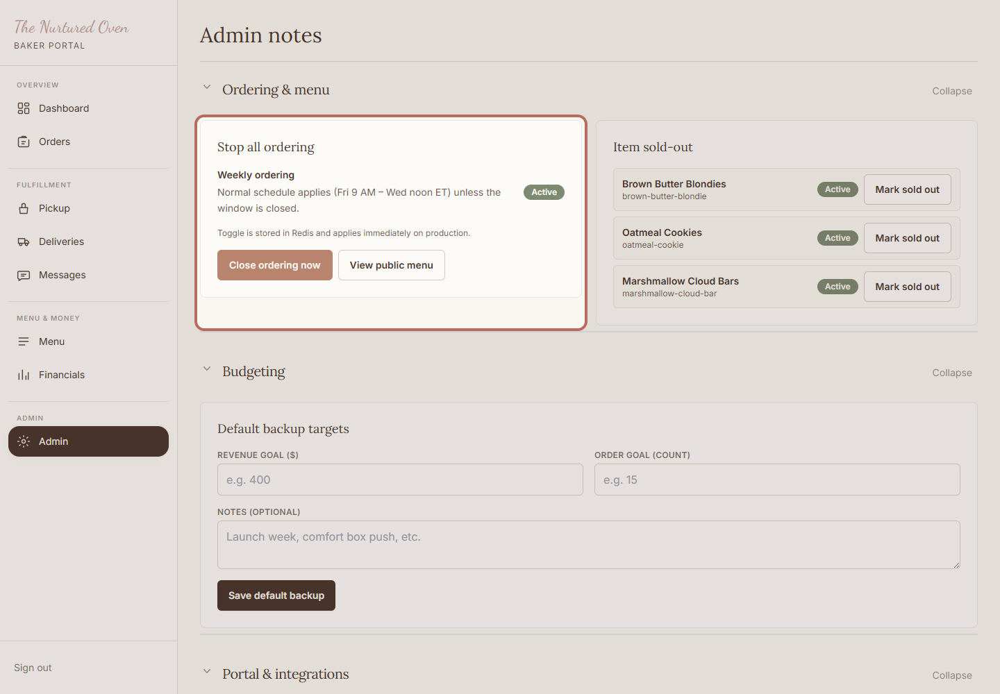
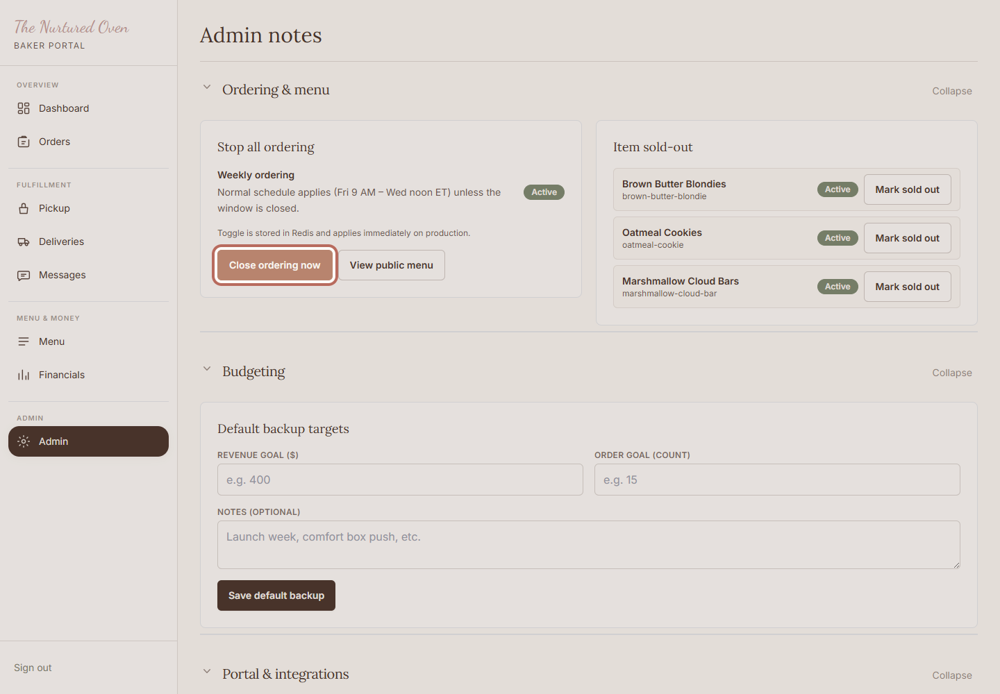
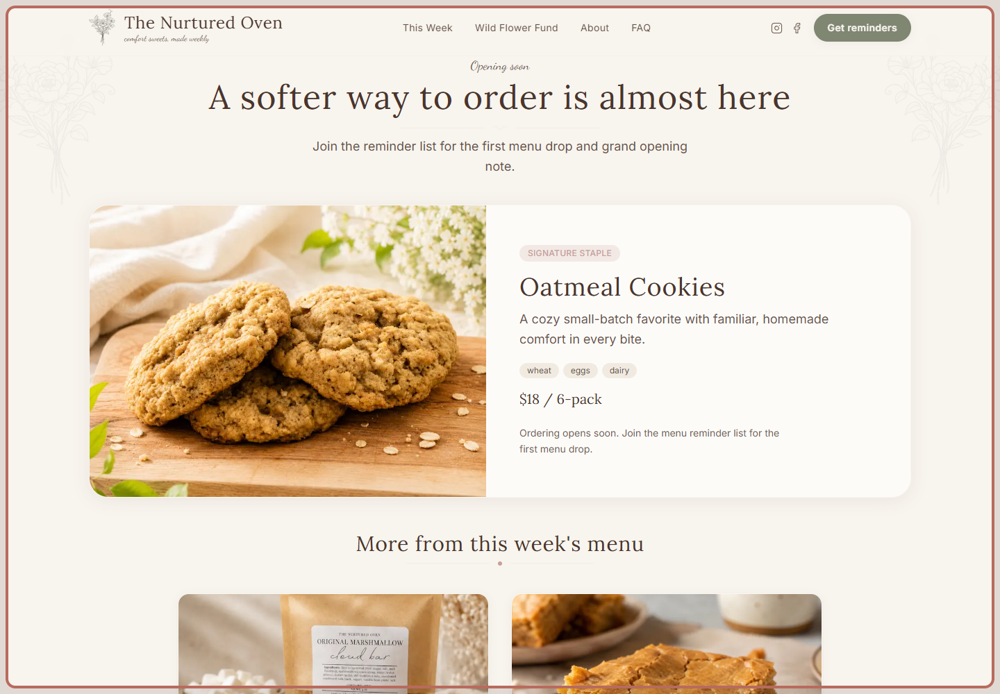

How to open or close ordering
Use this when you want customers to start ordering, or when you need to pause new orders.
Closing ordering is safe. It gives you time to check the menu before more orders come in.
Before You Start
- You can log in to the admin area.
- The weekly menu has been checked.
- You know whether customers should be able to order right now.
Steps
1. Open Admin notes and check ordering

Open Admin notes. This is where the ordering safety controls live.
Check the status before changing anything. This controls what customers can do next.
Expected result: You know whether customers can order right now.
2. Open or close ordering

Click the ordering button only when you are ready. If you are unsure, closing ordering is the safest choice.
Expected result: The status changes as needed.
3. Check the public menu

Open the public menu and check what customers see after the change.
Expected result: The public menu matches the ordering choice you made.
Success Check
- The ordering status matches what you want right now.
- The public menu looks correct.
- Ordering is closed if anything still feels uncertain.
If Something Goes Wrong
Close ordering first. Then check the menu and paid orders. Ask Chandler for help if the next step is not clear.